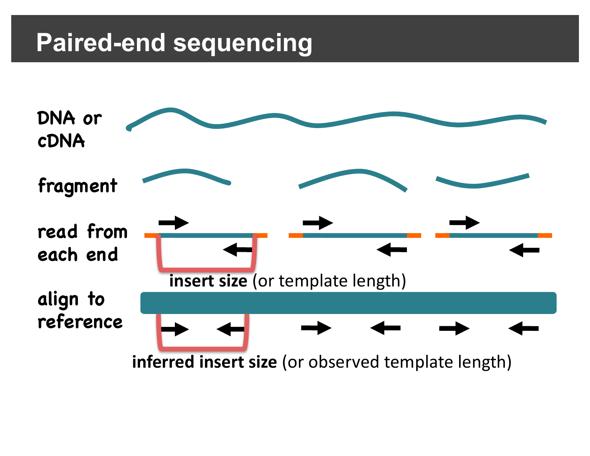
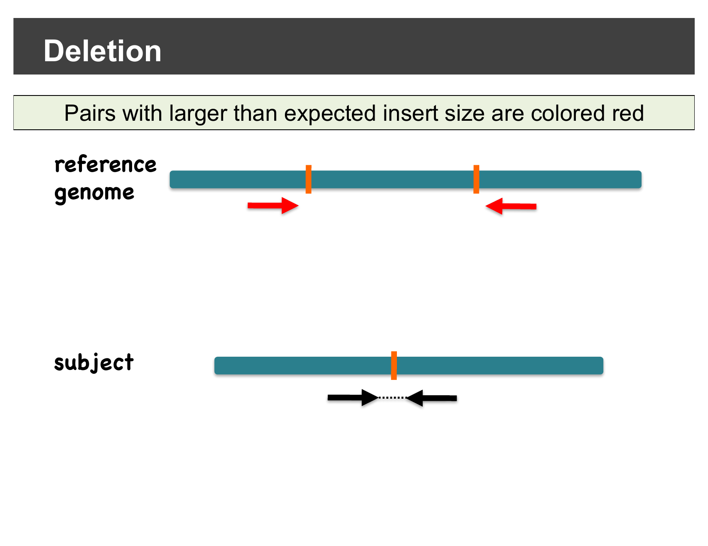
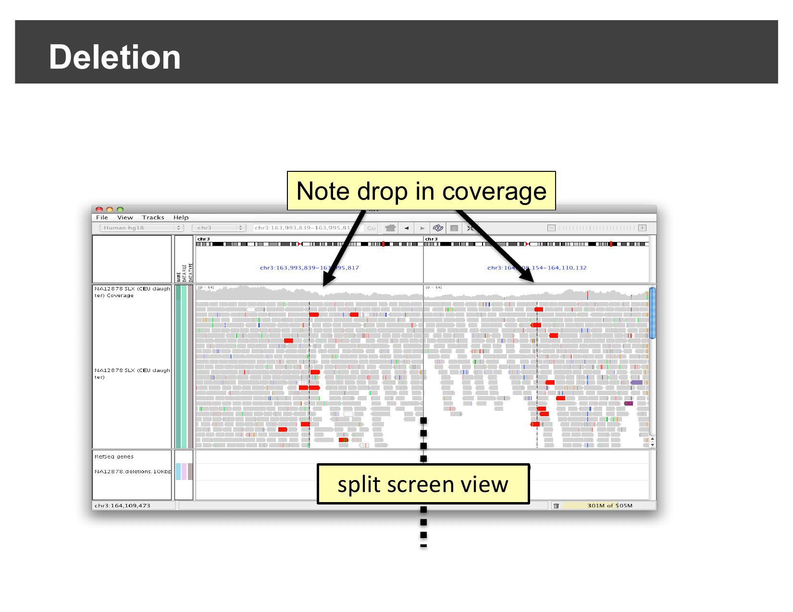
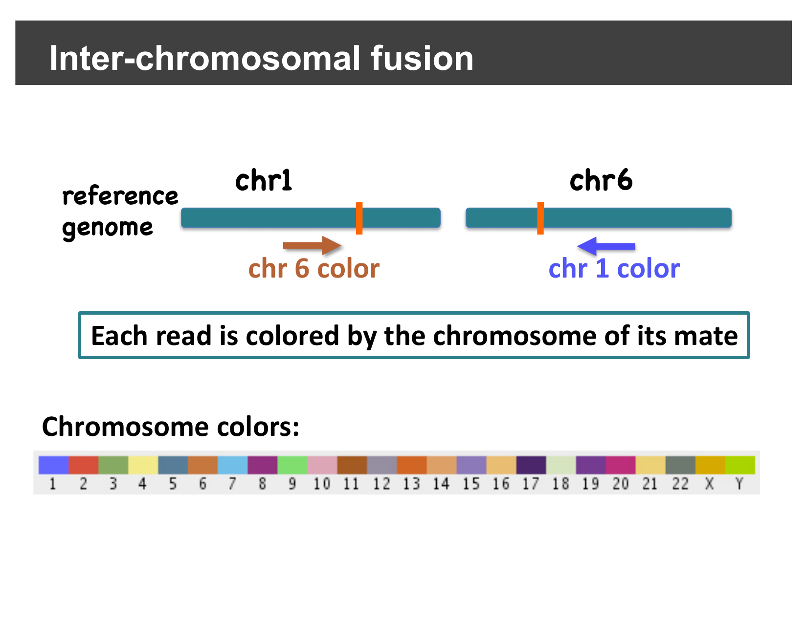
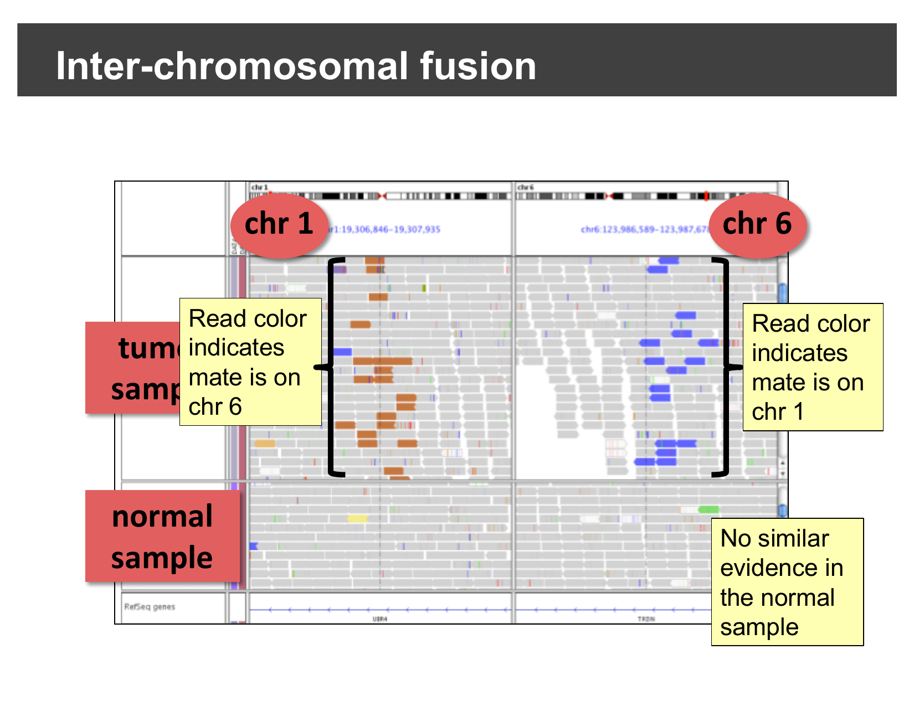
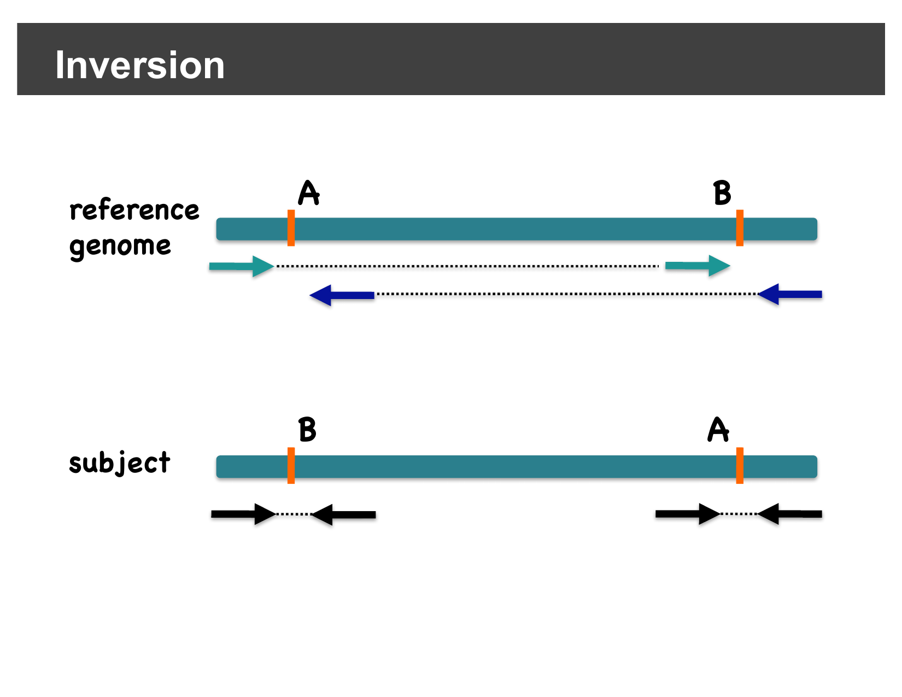
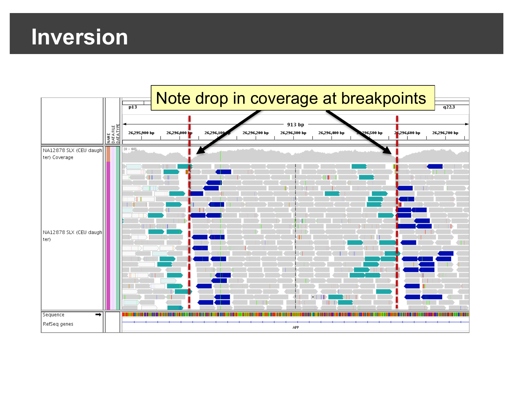
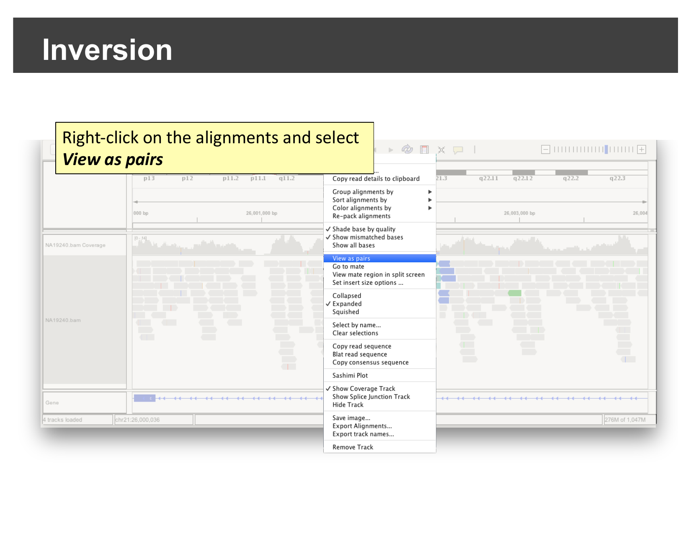
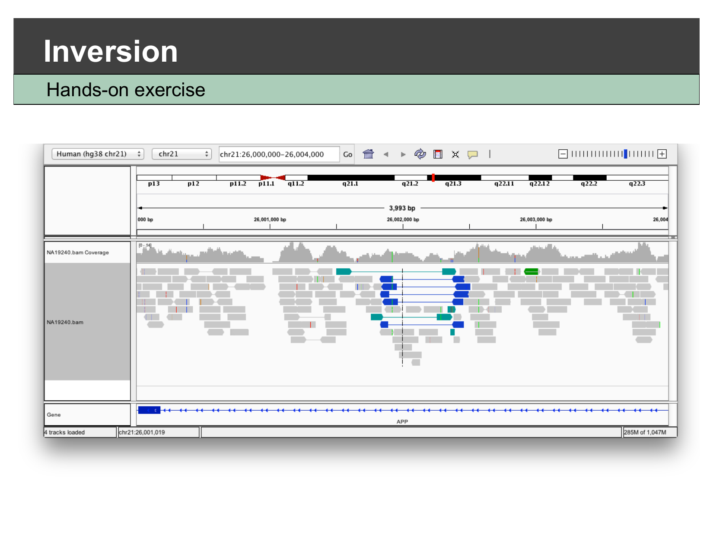

Viewing Structural Variants
Last updated on 2026-09-03 | Edit this page
Overview
Questions
- How can paired-end reads reveal deletions, fusions, and inversions?
- How do I confirm a candidate structural variant in IGV?
Objectives
- Explain how paired-end insert size and pair orientation can reveal structural variants without a dedicated SV caller.
- Recognize the alignment signatures of a deletion and an inter-chromosomal fusion.
- Use View as pairs to confirm an inversion breakpoint in real sequencing data.
Background: insert size and pair orientation
For paired-end sequencing, each DNA fragment is read from both ends. When a read pair aligns to the reference genome, IGV can measure the inferred insert size — the distance between the outer edges of the two aligned mates — and compare it to the expected insert size for the sequencing library. It can also check whether the pair’s orientation (which strand each mate aligns to) matches what a normal, non-rearranged fragment should look like.

Differences between the expected and observed insert size or orientation are exactly the kind of evidence dedicated structural variant callers look for — and you can see the same evidence directly in IGV, without running a caller at all.
Detecting deletions
If the subject genome has a deletion relative to the reference, a read pair that happens to span the deleted region will still align its two mates correctly, but the distance between them on the reference will be larger than expected — because the deleted bases are missing from the subject, but still present in the reference coordinates the mates are placed in.
IGV colors pairs with a larger-than-expected inferred insert size red, making them easy to spot:

In a real dataset, this shows up as a cluster of red pairs exactly at the deletion’s two breakpoints, together with a visible drop in coverage between them:

Detecting inter-chromosomal fusions
A fusion joins sequence from two different chromosomes together. Reads sequenced across the fusion junction have one mate on each original chromosome. IGV’s Color alignments by > read strand/mate chromosome option colors each read by the chromosome its mate is on, using a fixed color per chromosome:

In a real tumor/normal comparison, reads colored by an unexpected chromosome cluster right at the fusion breakpoint in the tumor sample, with no such evidence in the matched normal sample:

Detecting inversions
An inversion flips the orientation of a segment of the genome between two breakpoints. A read pair with one mate inside the inverted segment and one mate outside it no longer faces its mate in the usual way — instead of the normal “facing inward” orientation, both mates end up aligned to the same strand (both forward, or both reverse). IGV’s pair-orientation coloring highlights these same-strand pairs, so they stand out clearly at each inversion breakpoint:

Here is a real inversion, viewed at base-pair-scale resolution across the APP gene: a cluster of discordantly-oriented reads (colored teal or dark blue) and a visible drop in coverage sit right at each breakpoint.

Hands-on: confirm an inversion yourself
The workshop data includes a second sample sequenced across this same
region of chromosome 21. Select File > Open
Session…, navigate to igvData/svs/, and open
svs_session.xml. This loads the hg38_chr21
genome, the alignment file NA19240.bam, and jumps straight
to chr21:26,000,000-26,004,000 — the APP
locus.
Right-click on the alignments and select View as pairs.

Once paired, look for the same signature you just saw in the demo: a cluster of discordantly-colored, same-strand read pairs, roughly in the middle of the visible region.

What confirms this is an inversion, and not a deletion?
Both a deletion and an inversion can produce a visible drop in coverage at their breakpoints. What additional piece of evidence, visible in this view, tells you this is specifically an inversion rather than a deletion?
The coloring/orientation of the discordant reads. A deletion produces pairs with a larger-than-expected insert size but a normal forward/reverse orientation (colored red in this deck’s convention). An inversion instead produces pairs where both mates end up on the same strand relative to the reference (colored teal or dark blue here) — a orientation change, not just a distance change. Seeing same-strand pairs clustered at the breakpoints, rather than red long-insert pairs, is what points specifically to an inversion.
This is what SV callers automate
Dedicated structural variant callers (e.g. Delly, Manta, Lumpy) formalize exactly this kind of paired-end evidence — insert size, orientation, and split reads — across a whole genome, and output the results as a VCF you could load and view the same way you did in the previous episode. What you just did by eye for one locus is the same signal those tools search for everywhere.
- IGV can color read pairs by inferred insert size or by orientation, which reveals deletions, insertions, inter-chromosomal fusions, and inversions without running a dedicated SV caller.
- A deletion shows up as pairs with a larger-than-expected insert size (colored red) and a coverage drop between two breakpoints.
- A fusion shows up as reads colored by an unexpected mate chromosome, clustered at the fusion junction.
- An inversion shows up as same-strand (forward-forward or reverse-reverse) discordant pairs at its two breakpoints; right-click View as pairs to see this clearly.